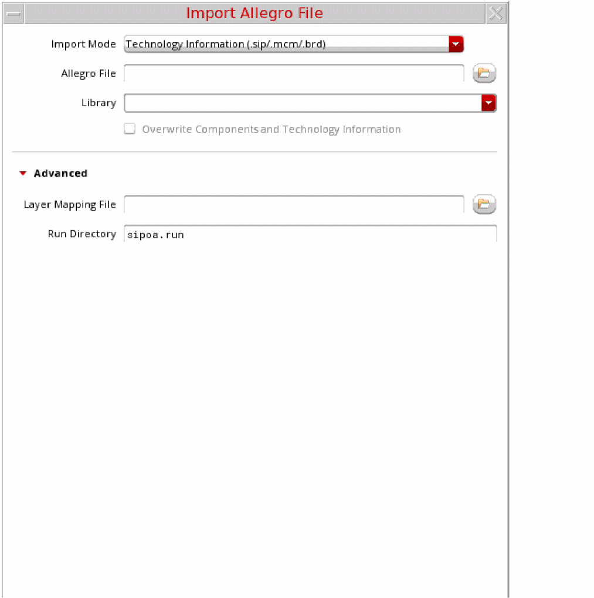

Import Technology File
A simpler alternative to create a technology database using a hand-written technology file is to import the technology from an existing Allegro .sip file that has been built using the same or a similar technology. For similar technologies, the technology file must be manually edited with the correct values for the target technology. After completing these edits, load the technology file into Virtuoso using the usual "Technology Manager" options.
You can import only technology information from Allegro using the translators by specifying the Technology Information (sip/mcm/brd) option in the Import Mode field.

The import of technology file includes mapping the following in SiP and OA:
- Padstack and symbol definitions of the SiP objects that map to OA cellviews including renaming to avoid same name cells in a library.
- Variants for symbols and padstacks that were modified at the instance level.
- The symbols and padstacks with differing sets of parameters in SiP and OA
- Derivation of cell names using signatures
- Layer mapping
Related Topics
Constructs in the Technology File
Return to top